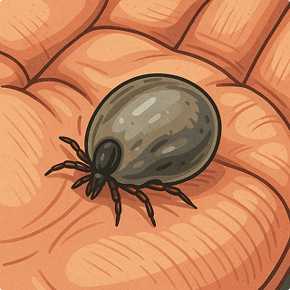

Mutualismo: Cooperação Que Beneficia Ambos
O mutualismo é uma associação benéfica entre seres de espécies diferentes. Ambas as partes se beneficiam da interação, como as abelhas que polinizam flores enquanto coletam néctar.

Comensalismo: Um Ganha, o Outro Não Se Prejudica
No comensalismo, uma espécie obtém benefício, enquanto a outra não é prejudicada nem beneficiada, como as rêmoras que se alimentam de restos deixados pelos tubarões.

Predatismo e Competição: Conflitos Naturais
O predatismo é uma relação de exploração, onde um organismo mata outro para se alimentar. Já a competição ocorre quando diferentes espécies disputam os mesmos recursos.

Parasitismo: Quando Um Vive Às Custas do Outro
No parasitismo, um organismo (parasita) depende de outro (hospedeiro) para sobreviver, causando-lhe prejuízos.
